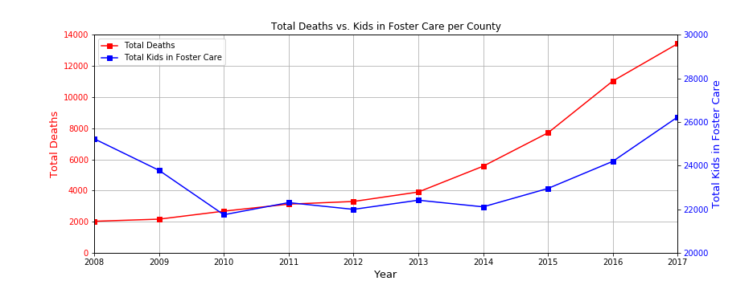
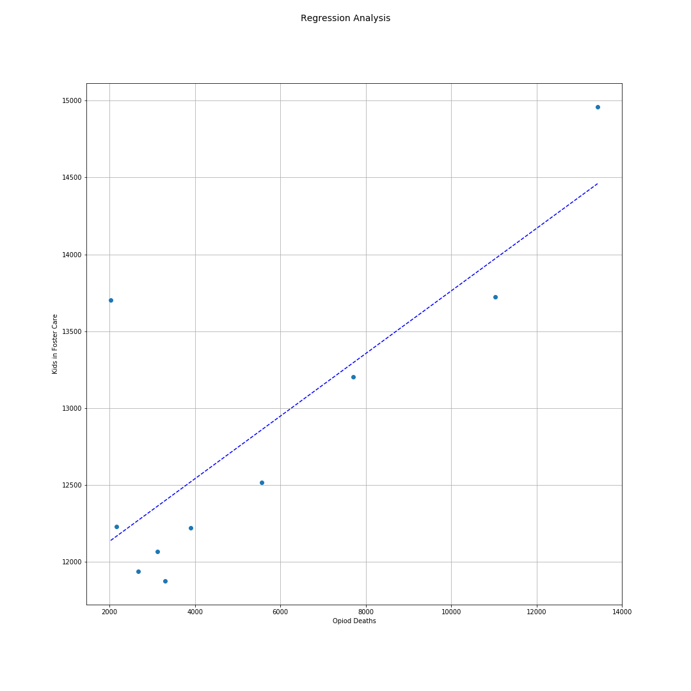
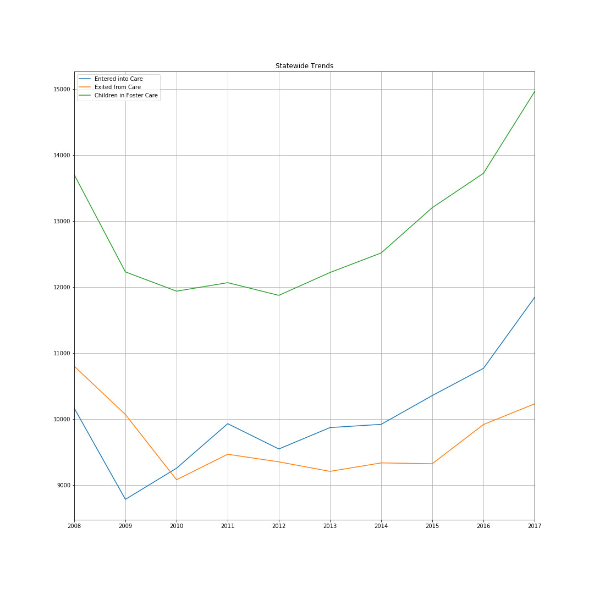

Foster Care and Opoid Overdoses
Ohio Counties by Opoid Overdose Deaths per 100,000

Ohio Overdose Deaths Plotted Against Kids In Foster Care

Regression Analysis Showing Strong Correlation

The Ultimate Effect on Ohio's Child Welfare System